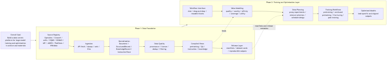

From scratch
Build corpora and structured records for fresh model training.
Lattice turns fragmented scientific sources into structured training data, then carries that data into pretraining, continued pretraining, fine-tuning, and post-training.
The product should not stop at data preparation. It should keep the same data foundation across every model stage.
Build corpora and structured records for fresh model training.
Continue training a base model on new scientific and domain-specific data.
Use compiled views for QA, instruction, and task adaptation.
Bring preference, safety, and alignment optimization into the same workflow.
Users should assemble workflows like product blocks instead of stitching together expert-only scripts.
Use natural language to specify sources, goals, and optimization intent.
Snap source blocks, transforms, and training stages into one executable chain.
Turn complex flows into repeatable modules instead of one-off engineering.
The repository already contains executable proof points, not only a concept page.
Phase 1 builds the data foundation. Phase 2 turns that foundation into a complete training and optimization layer.
